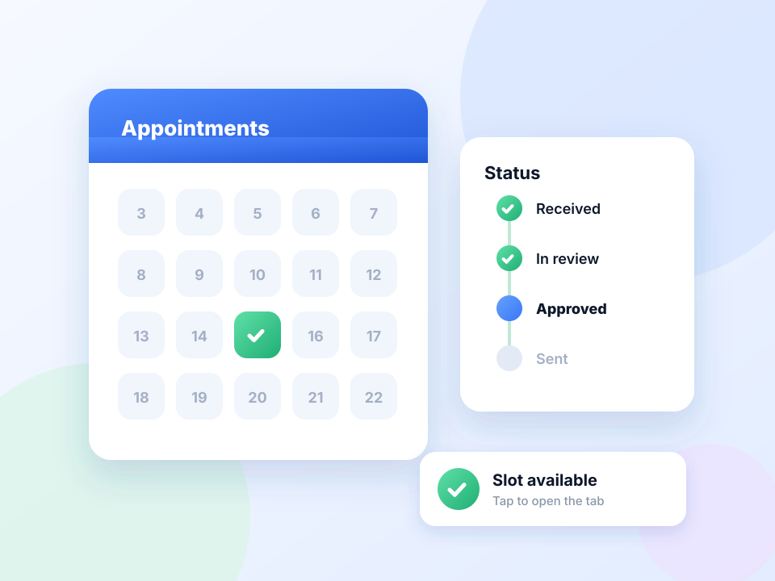

Find a slot without checking all day.
Cancellations free up slots at random times. Leave the booking page open and get alerted when the 'no availability' message goes away.

How appointment availability works
Cancellations free up slots at random times. Leave the booking page open and get alerted when the 'no availability' message goes away.
Many government and visa booking systems limit how often you may load a page and can lock an account for excessive requests. Keep intervals long, follow the portal's rules, and book the slot yourself when alerted.
Quick setup
Sign in and open the page that lists available dates.
Choose Stop when text disappears and paste the no-availability message.
Set Min 60 and Max 180.
Press Start and keep the browser open.
An appointment checker that runs in your browser
Cancellations put appointments back into booking systems at unpredictable times. An appointment checker keeps the availability page fresh and tells you when the no-slots message goes away, whether that is a driving test, a clinic, a council service or a visa slot.
Setting up a slot watch
Sign in, go to the page that lists dates, and copy the exact message shown when nothing is free. Use Stop when text disappears with that message, a random interval of one to three minutes, and leave the tab open.
Staying signed in
Regular reloads keep many sessions alive, but some portals sign you out after a fixed time. If the page shows a login form, the watch rule will see the message disappear and alert you, so check the tab.
Official portals deserve extra care
Government and visa booking systems often cap how many times you may load a page, and can lock an account that exceeds it. Use long intervals, follow the portal's published rules, and make the booking yourself.
Use intervals that are reasonable for the site and only monitor pages you are allowed to access. The extension does not get around logins, queues, rate limits or other access restrictions.
A worked example: a driving test date
The booking page reads There are no tests available at this centre. Choose Stop when text disappears, paste that sentence, and set Min 90 and Max 180. Leave the tab open with Keep the tab awake on. When a cancellation appears and the sentence is replaced by a list of dates, you are notified and can book.
Visa appointment checker: read the rules first
Visa portals are the strictest. Many publish a limit on page views per day and lock accounts that exceed it, sometimes for days. Work out how many checks your interval adds up to over the hours you plan to run it, and stay well under the limit.
A quick sum
One check every three minutes is 20 an hour, or 160 over an eight-hour day.
If you are alerted but there is no slot
- You were signed out. The message vanished because a login page replaced it.
- The portal showed an error page. Reload by hand and restart.
- The wording changed slightly. Copy the new sentence.
At a glance
- Watch for the message to vanish. Most booking pages show a fixed 'no appointments' line. Its disappearance is your signal.
- Stays signed in longer. Regular reloads keep many sessions from timing out while you wait.
- Runs for hours. Keep the tab awake and set a generous time limit.
Questions, answered.
Is this a visa slot checker?
It can watch any booking page for a change, including visa appointment pages. It does not log in, select dates or book for you.
Will it book the appointment?
No. It notifies you and you book.
How often should it check?
Every one to three minutes. Faster checking risks locking your account on official portals.
Why did it alert when no slot was free?
The page probably changed for another reason, such as a session timeout. Check the tab and sign in again.
Does it book the slot automatically?
No. It alerts you; you make the booking.
Let the page check itself.
Use the free extension for Chrome or Firefox.
Have a different use case in mind?
Share the browser task you would like to make easier. Your idea helps guide what gets built next.